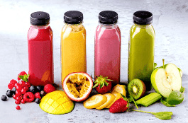

Get delicious and nutritious 100% fruit juice from Penny Juice of America. We provide 100% blended fruit juice concentrates that are specially made for kids and meet all the requirements of the FDA with regard to subsidy and nutrition. Customers love our products for their benefits, features, variety, service, and competitive pricing.
These blended fruit juice concentrates are for all childcare centers and preschools. Penny Juice of America uses only the highest quality fruit juice products.
Prepare all flavors using seven parts water and one part juice concentrate. You don’t need to refrigerate the concentrate before or after opening it.
Reduce cost per ounce, storage and handling requirements.
Kids love penny juice concentrates because it’s available in various exciting flavors and colors. Each case contains six half-gallon bottles of different flavors
No contracts!
Free delivery nationwide!
Minimum order 1 case